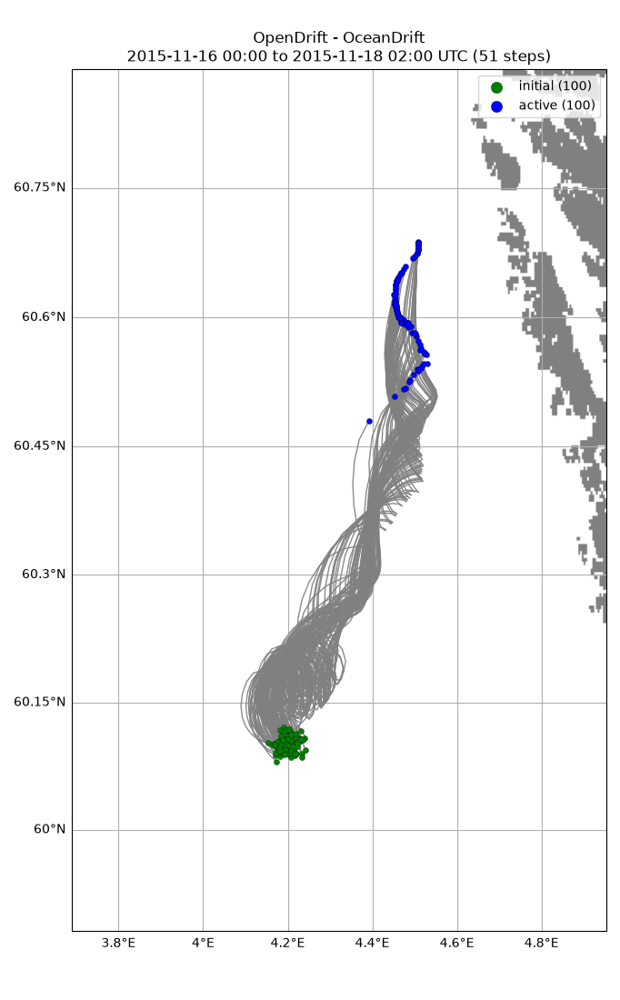
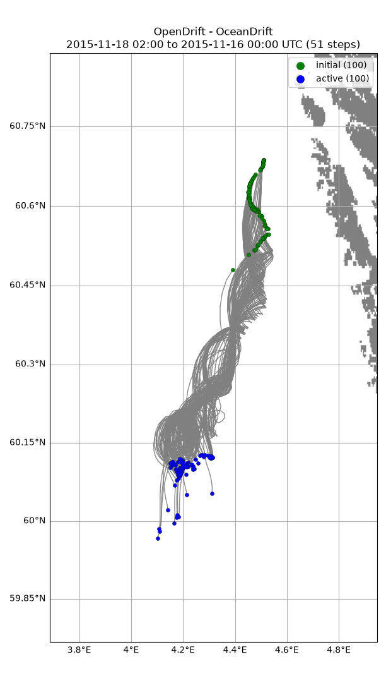

Note
Go to the end to download the full example code.
Back and forth
import os
import opendrift
from opendrift.readers import reader_netCDF_CF_generic
from opendrift.models.oceandrift import OceanDrift
ncfile = 'backandforth.nc'
o = OceanDrift(loglevel=20) # Set loglevel to 0 for debug information
reader_norkyst = reader_netCDF_CF_generic.Reader(opendrift.test_data_folder +
'16Nov2015_NorKyst_z_surface/norkyst800_subset_16Nov2015.nc')
#reader_norkyst = reader_netCDF_CF_generic.Reader('https://thredds.met.no/thredds/dodsC/fou-hi/norkystv3_800m_m00_be')
o.add_reader(reader_norkyst)
o.set_config('environment:fallback:land_binary_mask', 0)
12:09:24 INFO opendrift:569: OpenDriftSimulation initialised (version 1.14.11 / v1.14.12-45-g2e494c3)
12:09:24 INFO opendrift.readers:67: Opening file with xr.open_dataset
12:09:24 INFO opendrift.readers.reader_netCDF_CF_generic:340: Detected dimensions: {'x': 'X', 'y': 'Y', 'z': 'depth', 'time': 'time'}
Forward run Seeding some particles
lon = 4.2; lat = 60.1;
time = reader_norkyst.start_time
o.seed_elements(lon, lat, radius=1000, number=100, time=time)
o.run(steps=50*4, time_step=900, time_step_output=3600, outfile=ncfile)
12:09:25 INFO opendrift.models.basemodel.environment:203: Adding a global landmask from GSHHG
12:09:31 INFO opendrift.models.basemodel.environment:227: Fallback values will be used for the following variables which have no readers:
12:09:31 INFO opendrift.models.basemodel.environment:230: sea_surface_height: 0.000000
12:09:31 INFO opendrift.models.basemodel.environment:230: x_wind: 0.000000
12:09:31 INFO opendrift.models.basemodel.environment:230: y_wind: 0.000000
12:09:31 INFO opendrift.models.basemodel.environment:230: upward_sea_water_velocity: 0.000000
12:09:31 INFO opendrift.models.basemodel.environment:230: ocean_vertical_diffusivity: 0.000000
12:09:31 INFO opendrift.models.basemodel.environment:230: horizontal_diffusivity: 0.000000
12:09:31 INFO opendrift.models.basemodel.environment:230: sea_surface_wave_significant_height: 0.000000
12:09:31 INFO opendrift.models.basemodel.environment:230: sea_surface_wave_stokes_drift_x_velocity: 0.000000
12:09:31 INFO opendrift.models.basemodel.environment:230: sea_surface_wave_stokes_drift_y_velocity: 0.000000
12:09:31 INFO opendrift.models.basemodel.environment:230: ocean_mixed_layer_thickness: 50.000000
12:09:31 INFO opendrift.models.basemodel.environment:230: sea_floor_depth_below_sea_level: 10000.000000
12:09:31 INFO opendrift:1910: Skipping environment variable ocean_vertical_diffusivity because of condition ['drift:vertical_mixing', 'is', False]
12:09:31 INFO opendrift:1910: Skipping environment variable ocean_mixed_layer_thickness because of condition ['drift:vertical_mixing', 'is', False]
12:09:31 INFO opendrift:1921: Storing previous values of element property lon because of condition (('general:coastline_action', 'in', ['stranding', 'previous']), 'or', ('general:seafloor_action', 'in', ['previous']))
12:09:31 INFO opendrift:1921: Storing previous values of element property lat because of condition (('general:coastline_action', 'in', ['stranding', 'previous']), 'or', ('general:seafloor_action', 'in', ['previous']))
12:09:31 INFO opendrift:1929: Storing previous values of environment variable sea_surface_height because of condition ['drift:vertical_advection', 'is', True]
12:09:31 INFO opendrift:958: Using existing reader for land_binary_mask to move elements to ocean
12:09:31 INFO opendrift:989: All points are in ocean
12:09:31 INFO opendrift:2237: 2015-11-16 00:00:00 - step 1 of 200 - 100 active elements (0 deactivated)
12:09:31 INFO opendrift:2237: 2015-11-16 00:15:00 - step 2 of 200 - 100 active elements (0 deactivated)
12:09:31 INFO opendrift:2237: 2015-11-16 00:30:00 - step 3 of 200 - 100 active elements (0 deactivated)
12:09:31 INFO opendrift:2237: 2015-11-16 00:45:00 - step 4 of 200 - 100 active elements (0 deactivated)
12:09:31 INFO opendrift:2237: 2015-11-16 01:00:00 - step 5 of 200 - 100 active elements (0 deactivated)
12:09:31 INFO opendrift:2237: 2015-11-16 01:15:00 - step 6 of 200 - 100 active elements (0 deactivated)
12:09:31 INFO opendrift:2237: 2015-11-16 01:30:00 - step 7 of 200 - 100 active elements (0 deactivated)
12:09:31 INFO opendrift:2237: 2015-11-16 01:45:00 - step 8 of 200 - 100 active elements (0 deactivated)
12:09:31 INFO opendrift:2237: 2015-11-16 02:00:00 - step 9 of 200 - 100 active elements (0 deactivated)
12:09:31 INFO opendrift:2237: 2015-11-16 02:15:00 - step 10 of 200 - 100 active elements (0 deactivated)
12:09:31 INFO opendrift:2237: 2015-11-16 02:30:00 - step 11 of 200 - 100 active elements (0 deactivated)
12:09:31 INFO opendrift:2237: 2015-11-16 02:45:00 - step 12 of 200 - 100 active elements (0 deactivated)
12:09:31 INFO opendrift:2237: 2015-11-16 03:00:00 - step 13 of 200 - 100 active elements (0 deactivated)
12:09:31 INFO opendrift:2237: 2015-11-16 03:15:00 - step 14 of 200 - 100 active elements (0 deactivated)
12:09:31 INFO opendrift:2237: 2015-11-16 03:30:00 - step 15 of 200 - 100 active elements (0 deactivated)
12:09:31 INFO opendrift:2237: 2015-11-16 03:45:00 - step 16 of 200 - 100 active elements (0 deactivated)
12:09:31 INFO opendrift:2237: 2015-11-16 04:00:00 - step 17 of 200 - 100 active elements (0 deactivated)
12:09:31 INFO opendrift:2237: 2015-11-16 04:15:00 - step 18 of 200 - 100 active elements (0 deactivated)
12:09:31 INFO opendrift:2237: 2015-11-16 04:30:00 - step 19 of 200 - 100 active elements (0 deactivated)
12:09:31 INFO opendrift:2237: 2015-11-16 04:45:00 - step 20 of 200 - 100 active elements (0 deactivated)
12:09:31 INFO opendrift:2237: 2015-11-16 05:00:00 - step 21 of 200 - 100 active elements (0 deactivated)
12:09:31 INFO opendrift:2237: 2015-11-16 05:15:00 - step 22 of 200 - 100 active elements (0 deactivated)
12:09:31 INFO opendrift:2237: 2015-11-16 05:30:00 - step 23 of 200 - 100 active elements (0 deactivated)
12:09:31 INFO opendrift:2237: 2015-11-16 05:45:00 - step 24 of 200 - 100 active elements (0 deactivated)
12:09:31 INFO opendrift:2237: 2015-11-16 06:00:00 - step 25 of 200 - 100 active elements (0 deactivated)
12:09:31 INFO opendrift:2237: 2015-11-16 06:15:00 - step 26 of 200 - 100 active elements (0 deactivated)
12:09:31 INFO opendrift:2237: 2015-11-16 06:30:00 - step 27 of 200 - 100 active elements (0 deactivated)
12:09:31 INFO opendrift:2237: 2015-11-16 06:45:00 - step 28 of 200 - 100 active elements (0 deactivated)
12:09:31 INFO opendrift:2237: 2015-11-16 07:00:00 - step 29 of 200 - 100 active elements (0 deactivated)
12:09:31 INFO opendrift:2237: 2015-11-16 07:15:00 - step 30 of 200 - 100 active elements (0 deactivated)
12:09:31 INFO opendrift:2237: 2015-11-16 07:30:00 - step 31 of 200 - 100 active elements (0 deactivated)
12:09:31 INFO opendrift:2237: 2015-11-16 07:45:00 - step 32 of 200 - 100 active elements (0 deactivated)
12:09:31 INFO opendrift:2237: 2015-11-16 08:00:00 - step 33 of 200 - 100 active elements (0 deactivated)
12:09:31 INFO opendrift:2237: 2015-11-16 08:15:00 - step 34 of 200 - 100 active elements (0 deactivated)
12:09:31 INFO opendrift:2237: 2015-11-16 08:30:00 - step 35 of 200 - 100 active elements (0 deactivated)
12:09:31 INFO opendrift:2237: 2015-11-16 08:45:00 - step 36 of 200 - 100 active elements (0 deactivated)
12:09:31 INFO opendrift:2237: 2015-11-16 09:00:00 - step 37 of 200 - 100 active elements (0 deactivated)
12:09:31 INFO opendrift:2237: 2015-11-16 09:15:00 - step 38 of 200 - 100 active elements (0 deactivated)
12:09:31 INFO opendrift:2237: 2015-11-16 09:30:00 - step 39 of 200 - 100 active elements (0 deactivated)
12:09:31 INFO opendrift:2237: 2015-11-16 09:45:00 - step 40 of 200 - 100 active elements (0 deactivated)
12:09:31 INFO opendrift:2237: 2015-11-16 10:00:00 - step 41 of 200 - 100 active elements (0 deactivated)
12:09:31 INFO opendrift:2237: 2015-11-16 10:15:00 - step 42 of 200 - 100 active elements (0 deactivated)
12:09:31 INFO opendrift:2237: 2015-11-16 10:30:00 - step 43 of 200 - 100 active elements (0 deactivated)
12:09:31 INFO opendrift:2237: 2015-11-16 10:45:00 - step 44 of 200 - 100 active elements (0 deactivated)
12:09:31 INFO opendrift:2237: 2015-11-16 11:00:00 - step 45 of 200 - 100 active elements (0 deactivated)
12:09:31 INFO opendrift:2237: 2015-11-16 11:15:00 - step 46 of 200 - 100 active elements (0 deactivated)
12:09:31 INFO opendrift:2237: 2015-11-16 11:30:00 - step 47 of 200 - 100 active elements (0 deactivated)
12:09:31 INFO opendrift:2237: 2015-11-16 11:45:00 - step 48 of 200 - 100 active elements (0 deactivated)
12:09:31 INFO opendrift:2237: 2015-11-16 12:00:00 - step 49 of 200 - 100 active elements (0 deactivated)
12:09:32 INFO opendrift:2237: 2015-11-16 12:15:00 - step 50 of 200 - 100 active elements (0 deactivated)
12:09:32 INFO opendrift:2237: 2015-11-16 12:30:00 - step 51 of 200 - 100 active elements (0 deactivated)
12:09:32 INFO opendrift:2237: 2015-11-16 12:45:00 - step 52 of 200 - 100 active elements (0 deactivated)
12:09:32 INFO opendrift:2237: 2015-11-16 13:00:00 - step 53 of 200 - 100 active elements (0 deactivated)
12:09:32 INFO opendrift:2237: 2015-11-16 13:15:00 - step 54 of 200 - 100 active elements (0 deactivated)
12:09:32 INFO opendrift:2237: 2015-11-16 13:30:00 - step 55 of 200 - 100 active elements (0 deactivated)
12:09:32 INFO opendrift:2237: 2015-11-16 13:45:00 - step 56 of 200 - 100 active elements (0 deactivated)
12:09:32 INFO opendrift:2237: 2015-11-16 14:00:00 - step 57 of 200 - 100 active elements (0 deactivated)
12:09:32 INFO opendrift:2237: 2015-11-16 14:15:00 - step 58 of 200 - 100 active elements (0 deactivated)
12:09:32 INFO opendrift:2237: 2015-11-16 14:30:00 - step 59 of 200 - 100 active elements (0 deactivated)
12:09:32 INFO opendrift:2237: 2015-11-16 14:45:00 - step 60 of 200 - 100 active elements (0 deactivated)
12:09:32 INFO opendrift:2237: 2015-11-16 15:00:00 - step 61 of 200 - 100 active elements (0 deactivated)
12:09:32 INFO opendrift:2237: 2015-11-16 15:15:00 - step 62 of 200 - 100 active elements (0 deactivated)
12:09:32 INFO opendrift:2237: 2015-11-16 15:30:00 - step 63 of 200 - 100 active elements (0 deactivated)
12:09:32 INFO opendrift:2237: 2015-11-16 15:45:00 - step 64 of 200 - 100 active elements (0 deactivated)
12:09:32 INFO opendrift:2237: 2015-11-16 16:00:00 - step 65 of 200 - 100 active elements (0 deactivated)
12:09:32 INFO opendrift:2237: 2015-11-16 16:15:00 - step 66 of 200 - 100 active elements (0 deactivated)
12:09:32 INFO opendrift:2237: 2015-11-16 16:30:00 - step 67 of 200 - 100 active elements (0 deactivated)
12:09:32 INFO opendrift:2237: 2015-11-16 16:45:00 - step 68 of 200 - 100 active elements (0 deactivated)
12:09:32 INFO opendrift:2237: 2015-11-16 17:00:00 - step 69 of 200 - 100 active elements (0 deactivated)
12:09:32 INFO opendrift:2237: 2015-11-16 17:15:00 - step 70 of 200 - 100 active elements (0 deactivated)
12:09:32 INFO opendrift:2237: 2015-11-16 17:30:00 - step 71 of 200 - 100 active elements (0 deactivated)
12:09:32 INFO opendrift:2237: 2015-11-16 17:45:00 - step 72 of 200 - 100 active elements (0 deactivated)
12:09:32 INFO opendrift:2237: 2015-11-16 18:00:00 - step 73 of 200 - 100 active elements (0 deactivated)
12:09:32 INFO opendrift:2237: 2015-11-16 18:15:00 - step 74 of 200 - 100 active elements (0 deactivated)
12:09:32 INFO opendrift:2237: 2015-11-16 18:30:00 - step 75 of 200 - 100 active elements (0 deactivated)
12:09:32 INFO opendrift:2237: 2015-11-16 18:45:00 - step 76 of 200 - 100 active elements (0 deactivated)
12:09:32 INFO opendrift:2237: 2015-11-16 19:00:00 - step 77 of 200 - 100 active elements (0 deactivated)
12:09:32 INFO opendrift:2237: 2015-11-16 19:15:00 - step 78 of 200 - 100 active elements (0 deactivated)
12:09:32 INFO opendrift:2237: 2015-11-16 19:30:00 - step 79 of 200 - 100 active elements (0 deactivated)
12:09:32 INFO opendrift:2237: 2015-11-16 19:45:00 - step 80 of 200 - 100 active elements (0 deactivated)
12:09:32 INFO opendrift:2237: 2015-11-16 20:00:00 - step 81 of 200 - 100 active elements (0 deactivated)
12:09:32 INFO opendrift:2237: 2015-11-16 20:15:00 - step 82 of 200 - 100 active elements (0 deactivated)
12:09:32 INFO opendrift:2237: 2015-11-16 20:30:00 - step 83 of 200 - 100 active elements (0 deactivated)
12:09:32 INFO opendrift:2237: 2015-11-16 20:45:00 - step 84 of 200 - 100 active elements (0 deactivated)
12:09:32 INFO opendrift:2237: 2015-11-16 21:00:00 - step 85 of 200 - 100 active elements (0 deactivated)
12:09:32 INFO opendrift:2237: 2015-11-16 21:15:00 - step 86 of 200 - 100 active elements (0 deactivated)
12:09:32 INFO opendrift:2237: 2015-11-16 21:30:00 - step 87 of 200 - 100 active elements (0 deactivated)
12:09:32 INFO opendrift:2237: 2015-11-16 21:45:00 - step 88 of 200 - 100 active elements (0 deactivated)
12:09:32 INFO opendrift:2237: 2015-11-16 22:00:00 - step 89 of 200 - 100 active elements (0 deactivated)
12:09:32 INFO opendrift:2237: 2015-11-16 22:15:00 - step 90 of 200 - 100 active elements (0 deactivated)
12:09:32 INFO opendrift:2237: 2015-11-16 22:30:00 - step 91 of 200 - 100 active elements (0 deactivated)
12:09:32 INFO opendrift:2237: 2015-11-16 22:45:00 - step 92 of 200 - 100 active elements (0 deactivated)
12:09:32 INFO opendrift:2237: 2015-11-16 23:00:00 - step 93 of 200 - 100 active elements (0 deactivated)
12:09:32 INFO opendrift:2237: 2015-11-16 23:15:00 - step 94 of 200 - 100 active elements (0 deactivated)
12:09:32 INFO opendrift:2237: 2015-11-16 23:30:00 - step 95 of 200 - 100 active elements (0 deactivated)
12:09:32 INFO opendrift:2237: 2015-11-16 23:45:00 - step 96 of 200 - 100 active elements (0 deactivated)
12:09:32 INFO opendrift:2237: 2015-11-17 00:00:00 - step 97 of 200 - 100 active elements (0 deactivated)
12:09:32 INFO opendrift:2237: 2015-11-17 00:15:00 - step 98 of 200 - 100 active elements (0 deactivated)
12:09:32 INFO opendrift:2237: 2015-11-17 00:30:00 - step 99 of 200 - 100 active elements (0 deactivated)
12:09:32 INFO opendrift:2237: 2015-11-17 00:45:00 - step 100 of 200 - 100 active elements (0 deactivated)
12:09:32 INFO opendrift:2237: 2015-11-17 01:00:00 - step 101 of 200 - 100 active elements (0 deactivated)
12:09:32 INFO opendrift:2237: 2015-11-17 01:15:00 - step 102 of 200 - 100 active elements (0 deactivated)
12:09:32 INFO opendrift:2237: 2015-11-17 01:30:00 - step 103 of 200 - 100 active elements (0 deactivated)
12:09:32 INFO opendrift:2237: 2015-11-17 01:45:00 - step 104 of 200 - 100 active elements (0 deactivated)
12:09:32 INFO opendrift:2237: 2015-11-17 02:00:00 - step 105 of 200 - 100 active elements (0 deactivated)
12:09:32 INFO opendrift:2237: 2015-11-17 02:15:00 - step 106 of 200 - 100 active elements (0 deactivated)
12:09:32 INFO opendrift:2237: 2015-11-17 02:30:00 - step 107 of 200 - 100 active elements (0 deactivated)
12:09:32 INFO opendrift:2237: 2015-11-17 02:45:00 - step 108 of 200 - 100 active elements (0 deactivated)
12:09:32 INFO opendrift:2237: 2015-11-17 03:00:00 - step 109 of 200 - 100 active elements (0 deactivated)
12:09:32 INFO opendrift:2237: 2015-11-17 03:15:00 - step 110 of 200 - 100 active elements (0 deactivated)
12:09:32 INFO opendrift:2237: 2015-11-17 03:30:00 - step 111 of 200 - 100 active elements (0 deactivated)
12:09:32 INFO opendrift:2237: 2015-11-17 03:45:00 - step 112 of 200 - 100 active elements (0 deactivated)
12:09:33 INFO opendrift:2237: 2015-11-17 04:00:00 - step 113 of 200 - 100 active elements (0 deactivated)
12:09:33 INFO opendrift:2237: 2015-11-17 04:15:00 - step 114 of 200 - 100 active elements (0 deactivated)
12:09:33 INFO opendrift:2237: 2015-11-17 04:30:00 - step 115 of 200 - 100 active elements (0 deactivated)
12:09:33 INFO opendrift:2237: 2015-11-17 04:45:00 - step 116 of 200 - 100 active elements (0 deactivated)
12:09:33 INFO opendrift:2237: 2015-11-17 05:00:00 - step 117 of 200 - 100 active elements (0 deactivated)
12:09:33 INFO opendrift:2237: 2015-11-17 05:15:00 - step 118 of 200 - 100 active elements (0 deactivated)
12:09:33 INFO opendrift:2237: 2015-11-17 05:30:00 - step 119 of 200 - 100 active elements (0 deactivated)
12:09:33 INFO opendrift:2237: 2015-11-17 05:45:00 - step 120 of 200 - 100 active elements (0 deactivated)
12:09:33 INFO opendrift:2237: 2015-11-17 06:00:00 - step 121 of 200 - 100 active elements (0 deactivated)
12:09:33 INFO opendrift:2237: 2015-11-17 06:15:00 - step 122 of 200 - 100 active elements (0 deactivated)
12:09:33 INFO opendrift:2237: 2015-11-17 06:30:00 - step 123 of 200 - 100 active elements (0 deactivated)
12:09:33 INFO opendrift:2237: 2015-11-17 06:45:00 - step 124 of 200 - 100 active elements (0 deactivated)
12:09:33 INFO opendrift:2237: 2015-11-17 07:00:00 - step 125 of 200 - 100 active elements (0 deactivated)
12:09:33 INFO opendrift:2237: 2015-11-17 07:15:00 - step 126 of 200 - 100 active elements (0 deactivated)
12:09:33 INFO opendrift:2237: 2015-11-17 07:30:00 - step 127 of 200 - 100 active elements (0 deactivated)
12:09:33 INFO opendrift:2237: 2015-11-17 07:45:00 - step 128 of 200 - 100 active elements (0 deactivated)
12:09:33 INFO opendrift:2237: 2015-11-17 08:00:00 - step 129 of 200 - 100 active elements (0 deactivated)
12:09:33 INFO opendrift:2237: 2015-11-17 08:15:00 - step 130 of 200 - 100 active elements (0 deactivated)
12:09:33 INFO opendrift:2237: 2015-11-17 08:30:00 - step 131 of 200 - 100 active elements (0 deactivated)
12:09:33 INFO opendrift:2237: 2015-11-17 08:45:00 - step 132 of 200 - 100 active elements (0 deactivated)
12:09:33 INFO opendrift:2237: 2015-11-17 09:00:00 - step 133 of 200 - 100 active elements (0 deactivated)
12:09:33 INFO opendrift:2237: 2015-11-17 09:15:00 - step 134 of 200 - 100 active elements (0 deactivated)
12:09:33 INFO opendrift:2237: 2015-11-17 09:30:00 - step 135 of 200 - 100 active elements (0 deactivated)
12:09:33 INFO opendrift:2237: 2015-11-17 09:45:00 - step 136 of 200 - 100 active elements (0 deactivated)
12:09:33 INFO opendrift:2237: 2015-11-17 10:00:00 - step 137 of 200 - 100 active elements (0 deactivated)
12:09:33 INFO opendrift:2237: 2015-11-17 10:15:00 - step 138 of 200 - 100 active elements (0 deactivated)
12:09:33 INFO opendrift:2237: 2015-11-17 10:30:00 - step 139 of 200 - 100 active elements (0 deactivated)
12:09:33 INFO opendrift:2237: 2015-11-17 10:45:00 - step 140 of 200 - 100 active elements (0 deactivated)
12:09:33 INFO opendrift:2237: 2015-11-17 11:00:00 - step 141 of 200 - 100 active elements (0 deactivated)
12:09:33 INFO opendrift:2237: 2015-11-17 11:15:00 - step 142 of 200 - 100 active elements (0 deactivated)
12:09:33 INFO opendrift:2237: 2015-11-17 11:30:00 - step 143 of 200 - 100 active elements (0 deactivated)
12:09:33 INFO opendrift:2237: 2015-11-17 11:45:00 - step 144 of 200 - 100 active elements (0 deactivated)
12:09:33 INFO opendrift:2237: 2015-11-17 12:00:00 - step 145 of 200 - 100 active elements (0 deactivated)
12:09:33 INFO opendrift:2237: 2015-11-17 12:15:00 - step 146 of 200 - 100 active elements (0 deactivated)
12:09:33 INFO opendrift:2237: 2015-11-17 12:30:00 - step 147 of 200 - 100 active elements (0 deactivated)
12:09:33 INFO opendrift:2237: 2015-11-17 12:45:00 - step 148 of 200 - 100 active elements (0 deactivated)
12:09:33 INFO opendrift:2237: 2015-11-17 13:00:00 - step 149 of 200 - 100 active elements (0 deactivated)
12:09:33 INFO opendrift:2237: 2015-11-17 13:15:00 - step 150 of 200 - 100 active elements (0 deactivated)
12:09:33 INFO opendrift:2237: 2015-11-17 13:30:00 - step 151 of 200 - 100 active elements (0 deactivated)
12:09:33 INFO opendrift:2237: 2015-11-17 13:45:00 - step 152 of 200 - 100 active elements (0 deactivated)
12:09:33 INFO opendrift:2237: 2015-11-17 14:00:00 - step 153 of 200 - 100 active elements (0 deactivated)
12:09:33 INFO opendrift:2237: 2015-11-17 14:15:00 - step 154 of 200 - 100 active elements (0 deactivated)
12:09:33 INFO opendrift:2237: 2015-11-17 14:30:00 - step 155 of 200 - 100 active elements (0 deactivated)
12:09:33 INFO opendrift:2237: 2015-11-17 14:45:00 - step 156 of 200 - 100 active elements (0 deactivated)
12:09:33 INFO opendrift:2237: 2015-11-17 15:00:00 - step 157 of 200 - 100 active elements (0 deactivated)
12:09:33 INFO opendrift:2237: 2015-11-17 15:15:00 - step 158 of 200 - 100 active elements (0 deactivated)
12:09:33 INFO opendrift:2237: 2015-11-17 15:30:00 - step 159 of 200 - 100 active elements (0 deactivated)
12:09:33 INFO opendrift:2237: 2015-11-17 15:45:00 - step 160 of 200 - 100 active elements (0 deactivated)
12:09:33 INFO opendrift:2237: 2015-11-17 16:00:00 - step 161 of 200 - 100 active elements (0 deactivated)
12:09:33 INFO opendrift:2237: 2015-11-17 16:15:00 - step 162 of 200 - 100 active elements (0 deactivated)
12:09:33 INFO opendrift:2237: 2015-11-17 16:30:00 - step 163 of 200 - 100 active elements (0 deactivated)
12:09:33 INFO opendrift:2237: 2015-11-17 16:45:00 - step 164 of 200 - 100 active elements (0 deactivated)
12:09:33 INFO opendrift:2237: 2015-11-17 17:00:00 - step 165 of 200 - 100 active elements (0 deactivated)
12:09:33 INFO opendrift:2237: 2015-11-17 17:15:00 - step 166 of 200 - 100 active elements (0 deactivated)
12:09:33 INFO opendrift:2237: 2015-11-17 17:30:00 - step 167 of 200 - 100 active elements (0 deactivated)
12:09:33 INFO opendrift:2237: 2015-11-17 17:45:00 - step 168 of 200 - 100 active elements (0 deactivated)
12:09:33 INFO opendrift:2237: 2015-11-17 18:00:00 - step 169 of 200 - 100 active elements (0 deactivated)
12:09:33 INFO opendrift:2237: 2015-11-17 18:15:00 - step 170 of 200 - 100 active elements (0 deactivated)
12:09:33 INFO opendrift:2237: 2015-11-17 18:30:00 - step 171 of 200 - 100 active elements (0 deactivated)
12:09:33 INFO opendrift:2237: 2015-11-17 18:45:00 - step 172 of 200 - 100 active elements (0 deactivated)
12:09:33 INFO opendrift:2237: 2015-11-17 19:00:00 - step 173 of 200 - 100 active elements (0 deactivated)
12:09:33 INFO opendrift:2237: 2015-11-17 19:15:00 - step 174 of 200 - 100 active elements (0 deactivated)
12:09:33 INFO opendrift:2237: 2015-11-17 19:30:00 - step 175 of 200 - 100 active elements (0 deactivated)
12:09:33 INFO opendrift:2237: 2015-11-17 19:45:00 - step 176 of 200 - 100 active elements (0 deactivated)
12:09:33 INFO opendrift:2237: 2015-11-17 20:00:00 - step 177 of 200 - 100 active elements (0 deactivated)
12:09:33 INFO opendrift:2237: 2015-11-17 20:15:00 - step 178 of 200 - 100 active elements (0 deactivated)
12:09:34 INFO opendrift:2237: 2015-11-17 20:30:00 - step 179 of 200 - 100 active elements (0 deactivated)
12:09:34 INFO opendrift:2237: 2015-11-17 20:45:00 - step 180 of 200 - 100 active elements (0 deactivated)
12:09:34 INFO opendrift:2237: 2015-11-17 21:00:00 - step 181 of 200 - 100 active elements (0 deactivated)
12:09:34 INFO opendrift:2237: 2015-11-17 21:15:00 - step 182 of 200 - 100 active elements (0 deactivated)
12:09:34 INFO opendrift:2237: 2015-11-17 21:30:00 - step 183 of 200 - 100 active elements (0 deactivated)
12:09:34 INFO opendrift:2237: 2015-11-17 21:45:00 - step 184 of 200 - 100 active elements (0 deactivated)
12:09:34 INFO opendrift:2237: 2015-11-17 22:00:00 - step 185 of 200 - 100 active elements (0 deactivated)
12:09:34 INFO opendrift:2237: 2015-11-17 22:15:00 - step 186 of 200 - 100 active elements (0 deactivated)
12:09:34 INFO opendrift:2237: 2015-11-17 22:30:00 - step 187 of 200 - 100 active elements (0 deactivated)
12:09:34 INFO opendrift:2237: 2015-11-17 22:45:00 - step 188 of 200 - 100 active elements (0 deactivated)
12:09:34 INFO opendrift:2237: 2015-11-17 23:00:00 - step 189 of 200 - 100 active elements (0 deactivated)
12:09:34 INFO opendrift:2237: 2015-11-17 23:15:00 - step 190 of 200 - 100 active elements (0 deactivated)
12:09:34 INFO opendrift:2237: 2015-11-17 23:30:00 - step 191 of 200 - 100 active elements (0 deactivated)
12:09:34 INFO opendrift:2237: 2015-11-17 23:45:00 - step 192 of 200 - 100 active elements (0 deactivated)
12:09:34 INFO opendrift:2237: 2015-11-18 00:00:00 - step 193 of 200 - 100 active elements (0 deactivated)
12:09:34 INFO opendrift:2237: 2015-11-18 00:15:00 - step 194 of 200 - 100 active elements (0 deactivated)
12:09:34 INFO opendrift:2237: 2015-11-18 00:30:00 - step 195 of 200 - 100 active elements (0 deactivated)
12:09:34 INFO opendrift:2237: 2015-11-18 00:45:00 - step 196 of 200 - 100 active elements (0 deactivated)
12:09:34 INFO opendrift:2237: 2015-11-18 01:00:00 - step 197 of 200 - 100 active elements (0 deactivated)
12:09:34 INFO opendrift:2237: 2015-11-18 01:15:00 - step 198 of 200 - 100 active elements (0 deactivated)
12:09:34 INFO opendrift:2237: 2015-11-18 01:30:00 - step 199 of 200 - 100 active elements (0 deactivated)
12:09:34 INFO opendrift:2237: 2015-11-18 01:45:00 - step 200 of 200 - 100 active elements (0 deactivated)
Print and plot results
print(o)
o.plot(buffer=.2, fast=True)
##%%
# Backward run:
# Import forward run, and seed elements at final positions and time
o = opendrift.open(ncfile)
elements_final = o.elements
time_final = o.time
del o
o = OceanDrift(loglevel=20) # Set loglevel to 0 for debug information
o.set_config('environment:fallback:land_binary_mask', 0)
o.add_reader(reader_norkyst)
o.schedule_elements(elements_final, time_final)

===========================
--------------------
Reader performance:
--------------------
/root/project/tests/test_data/16Nov2015_NorKyst_z_surface/norkyst800_subset_16Nov2015.nc
0:00:00.4 total
0:00:00.0 preparing
0:00:00.2 reading
0:00:00.0 interpolation
0:00:00.0 interpolation_time
0:00:00.1 rotating vectors
0:00:00.0 masking
--------------------
global_landmask
0:00:00.0 total
0:00:00.0 preparing
0:00:00.0 reading
0:00:00.0 masking
--------------------
Performance:
10.0 total time
6.8 configuration
0.0 preparing main loop
0.0 moving elements to ocean
3.1 main loop
0.0 updating elements
0.0 cleaning up
--------------------
===========================
Model: OceanDrift (OpenDrift version 1.14.11)
100 active Lagrangian3DArray particles (0 deactivated, 0 scheduled)
-------------------
Environment variables:
-----
x_sea_water_velocity
y_sea_water_velocity
1) /root/project/tests/test_data/16Nov2015_NorKyst_z_surface/norkyst800_subset_16Nov2015.nc
-----
land_binary_mask
1) global_landmask
-----
Readers not added for the following variables:
horizontal_diffusivity
sea_floor_depth_below_sea_level
sea_surface_height
sea_surface_wave_significant_height
sea_surface_wave_stokes_drift_x_velocity
sea_surface_wave_stokes_drift_y_velocity
upward_sea_water_velocity
x_wind
y_wind
Discarded readers:
Time:
Start: 2015-11-16 00:00:00 UTC
Present: 2015-11-18 02:00:00 UTC
Calculation steps: 200 * 0:15:00 - total time: 2 days, 2:00:00
Output steps: 51 * 1:00:00
===========================
12:09:35 WARNING opendrift:2613: Plotting fast. This will make your plots less accurate.
12:09:36 DEBUG opendrift.config:168: Adding 17 config items from __init__
12:09:36 DEBUG opendrift.config:178: Overwriting config item readers:max_number_of_fails
12:09:36 DEBUG opendrift.config:168: Adding 5 config items from __init__
12:09:36 INFO opendrift:569: OpenDriftSimulation initialised (version 1.14.11 / v1.14.12-45-g2e494c3)
12:09:36 DEBUG opendrift.config:168: Adding 19 config items from oceandrift
12:09:36 DEBUG opendrift.config:178: Overwriting config item seed:z
12:09:36 DEBUG opendrift.export.io_netcdf:110: Importing from backandforth.nc
12:09:36 DEBUG opendrift:1810: No elements to deactivate
12:09:36 DEBUG opendrift.export.io_netcdf:154: Setting imported config: environment:constant:x_sea_water_velocity -> None
12:09:36 DEBUG opendrift.export.io_netcdf:154: Setting imported config: environment:fallback:x_sea_water_velocity -> 0
12:09:36 DEBUG opendrift.export.io_netcdf:154: Setting imported config: environment:constant:y_sea_water_velocity -> None
12:09:36 DEBUG opendrift.export.io_netcdf:154: Setting imported config: environment:fallback:y_sea_water_velocity -> 0
12:09:36 DEBUG opendrift.export.io_netcdf:154: Setting imported config: environment:constant:sea_surface_height -> None
12:09:36 DEBUG opendrift.export.io_netcdf:154: Setting imported config: environment:fallback:sea_surface_height -> 0
12:09:36 DEBUG opendrift.export.io_netcdf:154: Setting imported config: environment:constant:x_wind -> None
12:09:36 DEBUG opendrift.export.io_netcdf:154: Setting imported config: environment:fallback:x_wind -> 0
12:09:36 DEBUG opendrift.export.io_netcdf:154: Setting imported config: environment:constant:y_wind -> None
12:09:36 DEBUG opendrift.export.io_netcdf:154: Setting imported config: environment:fallback:y_wind -> 0
12:09:36 DEBUG opendrift.export.io_netcdf:154: Setting imported config: environment:constant:upward_sea_water_velocity -> None
12:09:36 DEBUG opendrift.export.io_netcdf:154: Setting imported config: environment:fallback:upward_sea_water_velocity -> 0
12:09:36 DEBUG opendrift.export.io_netcdf:154: Setting imported config: environment:constant:ocean_vertical_diffusivity -> None
12:09:36 DEBUG opendrift.export.io_netcdf:154: Setting imported config: environment:fallback:ocean_vertical_diffusivity -> 0
12:09:36 DEBUG opendrift.export.io_netcdf:154: Setting imported config: environment:constant:horizontal_diffusivity -> None
12:09:36 DEBUG opendrift.export.io_netcdf:154: Setting imported config: environment:fallback:horizontal_diffusivity -> 0
12:09:36 DEBUG opendrift.export.io_netcdf:154: Setting imported config: environment:constant:sea_surface_wave_significant_height -> None
12:09:36 DEBUG opendrift.export.io_netcdf:154: Setting imported config: environment:fallback:sea_surface_wave_significant_height -> 0
12:09:36 DEBUG opendrift.export.io_netcdf:154: Setting imported config: environment:constant:sea_surface_wave_stokes_drift_x_velocity -> None
12:09:36 DEBUG opendrift.export.io_netcdf:154: Setting imported config: environment:fallback:sea_surface_wave_stokes_drift_x_velocity -> 0
12:09:36 DEBUG opendrift.export.io_netcdf:154: Setting imported config: environment:constant:sea_surface_wave_stokes_drift_y_velocity -> None
12:09:36 DEBUG opendrift.export.io_netcdf:154: Setting imported config: environment:fallback:sea_surface_wave_stokes_drift_y_velocity -> 0
12:09:36 DEBUG opendrift.export.io_netcdf:154: Setting imported config: environment:constant:ocean_mixed_layer_thickness -> None
12:09:36 DEBUG opendrift.export.io_netcdf:154: Setting imported config: environment:fallback:ocean_mixed_layer_thickness -> 50
12:09:36 DEBUG opendrift.export.io_netcdf:154: Setting imported config: environment:constant:sea_floor_depth_below_sea_level -> None
12:09:36 DEBUG opendrift.export.io_netcdf:154: Setting imported config: environment:fallback:sea_floor_depth_below_sea_level -> 10000
12:09:36 DEBUG opendrift.export.io_netcdf:154: Setting imported config: environment:constant:land_binary_mask -> None
12:09:36 DEBUG opendrift.export.io_netcdf:154: Setting imported config: environment:fallback:land_binary_mask -> 0.0
12:09:36 DEBUG opendrift.export.io_netcdf:154: Setting imported config: general:use_auto_landmask -> True
12:09:36 DEBUG opendrift.export.io_netcdf:154: Setting imported config: drift:current_uncertainty -> 0
12:09:36 DEBUG opendrift.export.io_netcdf:154: Setting imported config: drift:current_uncertainty_uniform -> 0
12:09:36 DEBUG opendrift.export.io_netcdf:154: Setting imported config: drift:max_speed -> 2.0
12:09:36 DEBUG opendrift.export.io_netcdf:154: Setting imported config: readers:max_number_of_fails -> 1
12:09:36 DEBUG opendrift.export.io_netcdf:154: Setting imported config: general:simulation_name ->
12:09:36 DEBUG opendrift.export.io_netcdf:154: Setting imported config: general:coastline_action -> stranding
12:09:36 DEBUG opendrift.export.io_netcdf:154: Setting imported config: general:coastline_approximation_precision -> 0.001
12:09:36 DEBUG opendrift.export.io_netcdf:154: Setting imported config: general:time_step_minutes -> 60
12:09:36 DEBUG opendrift.export.io_netcdf:154: Setting imported config: general:time_step_output_minutes -> None
12:09:36 DEBUG opendrift.export.io_netcdf:154: Setting imported config: seed:ocean_only -> True
12:09:36 DEBUG opendrift.export.io_netcdf:154: Setting imported config: seed:number -> 1
12:09:36 DEBUG opendrift.export.io_netcdf:154: Setting imported config: drift:max_age_seconds -> None
12:09:36 DEBUG opendrift.export.io_netcdf:154: Setting imported config: drift:advection_scheme -> euler
12:09:36 DEBUG opendrift.export.io_netcdf:154: Setting imported config: drift:profiles_depth -> 50
12:09:36 DEBUG opendrift.export.io_netcdf:154: Setting imported config: drift:wind_uncertainty -> 0
12:09:36 DEBUG opendrift.export.io_netcdf:154: Setting imported config: drift:relative_wind -> False
12:09:36 DEBUG opendrift.export.io_netcdf:154: Setting imported config: drift:deactivate_north_of -> None
12:09:36 DEBUG opendrift.export.io_netcdf:154: Setting imported config: drift:deactivate_south_of -> None
12:09:36 DEBUG opendrift.export.io_netcdf:154: Setting imported config: drift:deactivate_east_of -> None
12:09:36 DEBUG opendrift.export.io_netcdf:154: Setting imported config: drift:deactivate_west_of -> None
12:09:36 DEBUG opendrift.export.io_netcdf:154: Setting imported config: seed:origin_marker -> 0
12:09:36 DEBUG opendrift.export.io_netcdf:154: Setting imported config: seed:z -> 0
12:09:36 DEBUG opendrift.export.io_netcdf:154: Setting imported config: seed:wind_drift_factor -> 0.02
12:09:36 DEBUG opendrift.export.io_netcdf:154: Setting imported config: seed:current_drift_factor -> 1
12:09:36 DEBUG opendrift.export.io_netcdf:154: Setting imported config: seed:terminal_velocity -> 0.0
12:09:36 DEBUG opendrift.export.io_netcdf:154: Setting imported config: drift:vertical_advection -> True
12:09:36 DEBUG opendrift.export.io_netcdf:154: Setting imported config: drift:vertical_advection_at_surface -> False
12:09:36 DEBUG opendrift.export.io_netcdf:154: Setting imported config: drift:water_column_stretching -> False
12:09:36 DEBUG opendrift.export.io_netcdf:154: Setting imported config: drift:vertical_advection_correction -> False
12:09:36 DEBUG opendrift.export.io_netcdf:154: Setting imported config: drift:vertical_mixing -> False
12:09:36 DEBUG opendrift.export.io_netcdf:154: Setting imported config: drift:vertical_mixing_at_surface -> False
12:09:36 DEBUG opendrift.export.io_netcdf:154: Setting imported config: vertical_mixing:timestep -> 60
12:09:36 DEBUG opendrift.export.io_netcdf:154: Setting imported config: vertical_mixing:diffusivitymodel -> environment
12:09:36 DEBUG opendrift.export.io_netcdf:154: Setting imported config: vertical_mixing:background_diffusivity -> 1.2e-05
12:09:36 DEBUG opendrift.export.io_netcdf:154: Setting imported config: vertical_mixing:TSprofiles -> False
12:09:36 DEBUG opendrift.export.io_netcdf:154: Setting imported config: drift:wind_drift_depth -> 0.1
12:09:36 DEBUG opendrift.export.io_netcdf:154: Setting imported config: drift:stokes_drift -> True
12:09:36 DEBUG opendrift.export.io_netcdf:154: Setting imported config: drift:stokes_drift_profile -> Phillips
12:09:36 DEBUG opendrift.export.io_netcdf:154: Setting imported config: drift:use_tabularised_stokes_drift -> False
12:09:36 DEBUG opendrift.export.io_netcdf:154: Setting imported config: drift:tabularised_stokes_drift_fetch -> 25000
12:09:36 DEBUG opendrift.export.io_netcdf:154: Setting imported config: general:seafloor_action -> lift_to_seafloor
12:09:36 DEBUG opendrift.export.io_netcdf:154: Setting imported config: drift:truncate_ocean_model_below_m -> None
12:09:36 DEBUG opendrift.export.io_netcdf:154: Setting imported config: seed:seafloor -> False
12:09:36 INFO opendrift:81: Returning <class 'opendrift.models.oceandrift.OceanDrift'> object
12:09:36 DEBUG opendrift.models.oceandrift:110: No machine learning correction available.
12:09:36 DEBUG opendrift.config:168: Adding 28 config items from environment
12:09:36 DEBUG opendrift.config:168: Adding 5 config items from environment
12:09:36 INFO opendrift:569: OpenDriftSimulation initialised (version 1.14.11 / v1.14.12-45-g2e494c3)
12:09:36 INFO opendrift.models.basemodel.environment:203: Adding a global landmask from GSHHG
12:09:36 INFO opendrift.models.basemodel.environment:227: Fallback values will be used for the following variables which have no readers:
12:09:36 INFO opendrift.models.basemodel.environment:230: sea_surface_height: 0.000000
12:09:36 INFO opendrift.models.basemodel.environment:230: x_wind: 0.000000
12:09:36 INFO opendrift.models.basemodel.environment:230: y_wind: 0.000000
12:09:36 INFO opendrift.models.basemodel.environment:230: upward_sea_water_velocity: 0.000000
12:09:36 INFO opendrift.models.basemodel.environment:230: ocean_vertical_diffusivity: 0.000000
12:09:36 INFO opendrift.models.basemodel.environment:230: horizontal_diffusivity: 0.000000
12:09:36 INFO opendrift.models.basemodel.environment:230: sea_surface_wave_significant_height: 0.000000
12:09:36 INFO opendrift.models.basemodel.environment:230: sea_surface_wave_stokes_drift_x_velocity: 0.000000
12:09:36 INFO opendrift.models.basemodel.environment:230: sea_surface_wave_stokes_drift_y_velocity: 0.000000
12:09:36 INFO opendrift.models.basemodel.environment:230: ocean_mixed_layer_thickness: 50.000000
12:09:36 INFO opendrift.models.basemodel.environment:230: sea_floor_depth_below_sea_level: 10000.000000
array([ 0, 1, 2, 3, 4, 5, 6, 7, 8, 9, 10, 11, 12, 13, 14, 15, 16,
17, 18, 19, 20, 21, 22, 23, 24, 25, 26, 27, 28, 29, 30, 31, 32, 33,
34, 35, 36, 37, 38, 39, 40, 41, 42, 43, 44, 45, 46, 47, 48, 49, 50,
51, 52, 53, 54, 55, 56, 57, 58, 59, 60, 61, 62, 63, 64, 65, 66, 67,
68, 69, 70, 71, 72, 73, 74, 75, 76, 77, 78, 79, 80, 81, 82, 83, 84,
85, 86, 87, 88, 89, 90, 91, 92, 93, 94, 95, 96, 97, 98, 99])
Running model backwards from end of forward simulation
o.run(steps=50*4, time_step=-900, time_step_output=3600)
12:09:36 INFO opendrift:1910: Skipping environment variable ocean_vertical_diffusivity because of condition ['drift:vertical_mixing', 'is', False]
12:09:36 INFO opendrift:1910: Skipping environment variable ocean_mixed_layer_thickness because of condition ['drift:vertical_mixing', 'is', False]
12:09:36 INFO opendrift:1921: Storing previous values of element property lon because of condition (('general:coastline_action', 'in', ['stranding', 'previous']), 'or', ('general:seafloor_action', 'in', ['previous']))
12:09:36 INFO opendrift:1921: Storing previous values of element property lat because of condition (('general:coastline_action', 'in', ['stranding', 'previous']), 'or', ('general:seafloor_action', 'in', ['previous']))
12:09:36 INFO opendrift:1929: Storing previous values of environment variable sea_surface_height because of condition ['drift:vertical_advection', 'is', True]
12:09:36 INFO opendrift:1974: Backwards simulation, starting from last seeded element
12:09:36 INFO opendrift:2065: Backwards simulation, starting at time of last seeded element
12:09:36 INFO opendrift:958: Using existing reader for land_binary_mask to move elements to ocean
12:09:36 INFO opendrift:989: All points are in ocean
12:09:36 INFO opendrift:2237: 2015-11-18 02:00:00 - step 1 of 200 - 100 active elements (0 deactivated)
12:09:36 INFO opendrift:2237: 2015-11-18 01:45:00 - step 2 of 200 - 100 active elements (0 deactivated)
12:09:36 INFO opendrift:2237: 2015-11-18 01:30:00 - step 3 of 200 - 100 active elements (0 deactivated)
12:09:36 INFO opendrift:2237: 2015-11-18 01:15:00 - step 4 of 200 - 100 active elements (0 deactivated)
12:09:36 INFO opendrift:2237: 2015-11-18 01:00:00 - step 5 of 200 - 100 active elements (0 deactivated)
12:09:36 INFO opendrift:2237: 2015-11-18 00:45:00 - step 6 of 200 - 100 active elements (0 deactivated)
12:09:36 INFO opendrift:2237: 2015-11-18 00:30:00 - step 7 of 200 - 100 active elements (0 deactivated)
12:09:36 INFO opendrift:2237: 2015-11-18 00:15:00 - step 8 of 200 - 100 active elements (0 deactivated)
12:09:36 INFO opendrift:2237: 2015-11-18 00:00:00 - step 9 of 200 - 100 active elements (0 deactivated)
12:09:36 INFO opendrift:2237: 2015-11-17 23:45:00 - step 10 of 200 - 100 active elements (0 deactivated)
12:09:36 INFO opendrift:2237: 2015-11-17 23:30:00 - step 11 of 200 - 100 active elements (0 deactivated)
12:09:36 INFO opendrift:2237: 2015-11-17 23:15:00 - step 12 of 200 - 100 active elements (0 deactivated)
12:09:36 INFO opendrift:2237: 2015-11-17 23:00:00 - step 13 of 200 - 100 active elements (0 deactivated)
12:09:37 INFO opendrift:2237: 2015-11-17 22:45:00 - step 14 of 200 - 100 active elements (0 deactivated)
12:09:37 INFO opendrift:2237: 2015-11-17 22:30:00 - step 15 of 200 - 100 active elements (0 deactivated)
12:09:37 INFO opendrift:2237: 2015-11-17 22:15:00 - step 16 of 200 - 100 active elements (0 deactivated)
12:09:37 INFO opendrift:2237: 2015-11-17 22:00:00 - step 17 of 200 - 100 active elements (0 deactivated)
12:09:37 INFO opendrift:2237: 2015-11-17 21:45:00 - step 18 of 200 - 100 active elements (0 deactivated)
12:09:37 INFO opendrift:2237: 2015-11-17 21:30:00 - step 19 of 200 - 100 active elements (0 deactivated)
12:09:37 INFO opendrift:2237: 2015-11-17 21:15:00 - step 20 of 200 - 100 active elements (0 deactivated)
12:09:37 INFO opendrift:2237: 2015-11-17 21:00:00 - step 21 of 200 - 100 active elements (0 deactivated)
12:09:37 INFO opendrift:2237: 2015-11-17 20:45:00 - step 22 of 200 - 100 active elements (0 deactivated)
12:09:37 INFO opendrift:2237: 2015-11-17 20:30:00 - step 23 of 200 - 100 active elements (0 deactivated)
12:09:37 INFO opendrift:2237: 2015-11-17 20:15:00 - step 24 of 200 - 100 active elements (0 deactivated)
12:09:37 INFO opendrift:2237: 2015-11-17 20:00:00 - step 25 of 200 - 100 active elements (0 deactivated)
12:09:37 INFO opendrift:2237: 2015-11-17 19:45:00 - step 26 of 200 - 100 active elements (0 deactivated)
12:09:37 INFO opendrift:2237: 2015-11-17 19:30:00 - step 27 of 200 - 100 active elements (0 deactivated)
12:09:37 INFO opendrift:2237: 2015-11-17 19:15:00 - step 28 of 200 - 100 active elements (0 deactivated)
12:09:37 INFO opendrift:2237: 2015-11-17 19:00:00 - step 29 of 200 - 100 active elements (0 deactivated)
12:09:37 INFO opendrift:2237: 2015-11-17 18:45:00 - step 30 of 200 - 100 active elements (0 deactivated)
12:09:37 INFO opendrift:2237: 2015-11-17 18:30:00 - step 31 of 200 - 100 active elements (0 deactivated)
12:09:37 INFO opendrift:2237: 2015-11-17 18:15:00 - step 32 of 200 - 100 active elements (0 deactivated)
12:09:37 INFO opendrift:2237: 2015-11-17 18:00:00 - step 33 of 200 - 100 active elements (0 deactivated)
12:09:37 INFO opendrift:2237: 2015-11-17 17:45:00 - step 34 of 200 - 100 active elements (0 deactivated)
12:09:37 INFO opendrift:2237: 2015-11-17 17:30:00 - step 35 of 200 - 100 active elements (0 deactivated)
12:09:37 INFO opendrift:2237: 2015-11-17 17:15:00 - step 36 of 200 - 100 active elements (0 deactivated)
12:09:37 INFO opendrift:2237: 2015-11-17 17:00:00 - step 37 of 200 - 100 active elements (0 deactivated)
12:09:37 INFO opendrift:2237: 2015-11-17 16:45:00 - step 38 of 200 - 100 active elements (0 deactivated)
12:09:37 INFO opendrift:2237: 2015-11-17 16:30:00 - step 39 of 200 - 100 active elements (0 deactivated)
12:09:37 INFO opendrift:2237: 2015-11-17 16:15:00 - step 40 of 200 - 100 active elements (0 deactivated)
12:09:37 INFO opendrift:2237: 2015-11-17 16:00:00 - step 41 of 200 - 100 active elements (0 deactivated)
12:09:37 INFO opendrift:2237: 2015-11-17 15:45:00 - step 42 of 200 - 100 active elements (0 deactivated)
12:09:37 INFO opendrift:2237: 2015-11-17 15:30:00 - step 43 of 200 - 100 active elements (0 deactivated)
12:09:37 INFO opendrift:2237: 2015-11-17 15:15:00 - step 44 of 200 - 100 active elements (0 deactivated)
12:09:37 INFO opendrift:2237: 2015-11-17 15:00:00 - step 45 of 200 - 100 active elements (0 deactivated)
12:09:37 INFO opendrift:2237: 2015-11-17 14:45:00 - step 46 of 200 - 100 active elements (0 deactivated)
12:09:37 INFO opendrift:2237: 2015-11-17 14:30:00 - step 47 of 200 - 100 active elements (0 deactivated)
12:09:37 INFO opendrift:2237: 2015-11-17 14:15:00 - step 48 of 200 - 100 active elements (0 deactivated)
12:09:37 INFO opendrift:2237: 2015-11-17 14:00:00 - step 49 of 200 - 100 active elements (0 deactivated)
12:09:37 INFO opendrift:2237: 2015-11-17 13:45:00 - step 50 of 200 - 100 active elements (0 deactivated)
12:09:37 INFO opendrift:2237: 2015-11-17 13:30:00 - step 51 of 200 - 100 active elements (0 deactivated)
12:09:37 INFO opendrift:2237: 2015-11-17 13:15:00 - step 52 of 200 - 100 active elements (0 deactivated)
12:09:37 INFO opendrift:2237: 2015-11-17 13:00:00 - step 53 of 200 - 100 active elements (0 deactivated)
12:09:37 INFO opendrift:2237: 2015-11-17 12:45:00 - step 54 of 200 - 100 active elements (0 deactivated)
12:09:37 INFO opendrift:2237: 2015-11-17 12:30:00 - step 55 of 200 - 100 active elements (0 deactivated)
12:09:37 INFO opendrift:2237: 2015-11-17 12:15:00 - step 56 of 200 - 100 active elements (0 deactivated)
12:09:37 INFO opendrift:2237: 2015-11-17 12:00:00 - step 57 of 200 - 100 active elements (0 deactivated)
12:09:37 INFO opendrift:2237: 2015-11-17 11:45:00 - step 58 of 200 - 100 active elements (0 deactivated)
12:09:37 INFO opendrift:2237: 2015-11-17 11:30:00 - step 59 of 200 - 100 active elements (0 deactivated)
12:09:37 INFO opendrift:2237: 2015-11-17 11:15:00 - step 60 of 200 - 100 active elements (0 deactivated)
12:09:37 INFO opendrift:2237: 2015-11-17 11:00:00 - step 61 of 200 - 100 active elements (0 deactivated)
12:09:37 INFO opendrift:2237: 2015-11-17 10:45:00 - step 62 of 200 - 100 active elements (0 deactivated)
12:09:37 INFO opendrift:2237: 2015-11-17 10:30:00 - step 63 of 200 - 100 active elements (0 deactivated)
12:09:37 INFO opendrift:2237: 2015-11-17 10:15:00 - step 64 of 200 - 100 active elements (0 deactivated)
12:09:37 INFO opendrift:2237: 2015-11-17 10:00:00 - step 65 of 200 - 100 active elements (0 deactivated)
12:09:37 INFO opendrift:2237: 2015-11-17 09:45:00 - step 66 of 200 - 100 active elements (0 deactivated)
12:09:37 INFO opendrift:2237: 2015-11-17 09:30:00 - step 67 of 200 - 100 active elements (0 deactivated)
12:09:37 INFO opendrift:2237: 2015-11-17 09:15:00 - step 68 of 200 - 100 active elements (0 deactivated)
12:09:37 INFO opendrift:2237: 2015-11-17 09:00:00 - step 69 of 200 - 100 active elements (0 deactivated)
12:09:37 INFO opendrift:2237: 2015-11-17 08:45:00 - step 70 of 200 - 100 active elements (0 deactivated)
12:09:37 INFO opendrift:2237: 2015-11-17 08:30:00 - step 71 of 200 - 100 active elements (0 deactivated)
12:09:37 INFO opendrift:2237: 2015-11-17 08:15:00 - step 72 of 200 - 100 active elements (0 deactivated)
12:09:37 INFO opendrift:2237: 2015-11-17 08:00:00 - step 73 of 200 - 100 active elements (0 deactivated)
12:09:37 INFO opendrift:2237: 2015-11-17 07:45:00 - step 74 of 200 - 100 active elements (0 deactivated)
12:09:37 INFO opendrift:2237: 2015-11-17 07:30:00 - step 75 of 200 - 100 active elements (0 deactivated)
12:09:37 INFO opendrift:2237: 2015-11-17 07:15:00 - step 76 of 200 - 100 active elements (0 deactivated)
12:09:38 INFO opendrift:2237: 2015-11-17 07:00:00 - step 77 of 200 - 100 active elements (0 deactivated)
12:09:38 INFO opendrift:2237: 2015-11-17 06:45:00 - step 78 of 200 - 100 active elements (0 deactivated)
12:09:38 INFO opendrift:2237: 2015-11-17 06:30:00 - step 79 of 200 - 100 active elements (0 deactivated)
12:09:38 INFO opendrift:2237: 2015-11-17 06:15:00 - step 80 of 200 - 100 active elements (0 deactivated)
12:09:38 INFO opendrift:2237: 2015-11-17 06:00:00 - step 81 of 200 - 100 active elements (0 deactivated)
12:09:38 INFO opendrift:2237: 2015-11-17 05:45:00 - step 82 of 200 - 100 active elements (0 deactivated)
12:09:38 INFO opendrift:2237: 2015-11-17 05:30:00 - step 83 of 200 - 100 active elements (0 deactivated)
12:09:38 INFO opendrift:2237: 2015-11-17 05:15:00 - step 84 of 200 - 100 active elements (0 deactivated)
12:09:38 INFO opendrift:2237: 2015-11-17 05:00:00 - step 85 of 200 - 100 active elements (0 deactivated)
12:09:38 INFO opendrift:2237: 2015-11-17 04:45:00 - step 86 of 200 - 100 active elements (0 deactivated)
12:09:38 INFO opendrift:2237: 2015-11-17 04:30:00 - step 87 of 200 - 100 active elements (0 deactivated)
12:09:38 INFO opendrift:2237: 2015-11-17 04:15:00 - step 88 of 200 - 100 active elements (0 deactivated)
12:09:38 INFO opendrift:2237: 2015-11-17 04:00:00 - step 89 of 200 - 100 active elements (0 deactivated)
12:09:38 INFO opendrift:2237: 2015-11-17 03:45:00 - step 90 of 200 - 100 active elements (0 deactivated)
12:09:38 INFO opendrift:2237: 2015-11-17 03:30:00 - step 91 of 200 - 100 active elements (0 deactivated)
12:09:38 INFO opendrift:2237: 2015-11-17 03:15:00 - step 92 of 200 - 100 active elements (0 deactivated)
12:09:38 INFO opendrift:2237: 2015-11-17 03:00:00 - step 93 of 200 - 100 active elements (0 deactivated)
12:09:38 INFO opendrift:2237: 2015-11-17 02:45:00 - step 94 of 200 - 100 active elements (0 deactivated)
12:09:38 INFO opendrift:2237: 2015-11-17 02:30:00 - step 95 of 200 - 100 active elements (0 deactivated)
12:09:38 INFO opendrift:2237: 2015-11-17 02:15:00 - step 96 of 200 - 100 active elements (0 deactivated)
12:09:38 INFO opendrift:2237: 2015-11-17 02:00:00 - step 97 of 200 - 100 active elements (0 deactivated)
12:09:38 INFO opendrift:2237: 2015-11-17 01:45:00 - step 98 of 200 - 100 active elements (0 deactivated)
12:09:38 INFO opendrift:2237: 2015-11-17 01:30:00 - step 99 of 200 - 100 active elements (0 deactivated)
12:09:38 INFO opendrift:2237: 2015-11-17 01:15:00 - step 100 of 200 - 100 active elements (0 deactivated)
12:09:38 INFO opendrift:2237: 2015-11-17 01:00:00 - step 101 of 200 - 100 active elements (0 deactivated)
12:09:38 INFO opendrift:2237: 2015-11-17 00:45:00 - step 102 of 200 - 100 active elements (0 deactivated)
12:09:38 INFO opendrift:2237: 2015-11-17 00:30:00 - step 103 of 200 - 100 active elements (0 deactivated)
12:09:38 INFO opendrift:2237: 2015-11-17 00:15:00 - step 104 of 200 - 100 active elements (0 deactivated)
12:09:38 INFO opendrift:2237: 2015-11-17 00:00:00 - step 105 of 200 - 100 active elements (0 deactivated)
12:09:38 INFO opendrift:2237: 2015-11-16 23:45:00 - step 106 of 200 - 100 active elements (0 deactivated)
12:09:38 INFO opendrift:2237: 2015-11-16 23:30:00 - step 107 of 200 - 100 active elements (0 deactivated)
12:09:38 INFO opendrift:2237: 2015-11-16 23:15:00 - step 108 of 200 - 100 active elements (0 deactivated)
12:09:38 INFO opendrift:2237: 2015-11-16 23:00:00 - step 109 of 200 - 100 active elements (0 deactivated)
12:09:38 INFO opendrift:2237: 2015-11-16 22:45:00 - step 110 of 200 - 100 active elements (0 deactivated)
12:09:38 INFO opendrift:2237: 2015-11-16 22:30:00 - step 111 of 200 - 100 active elements (0 deactivated)
12:09:38 INFO opendrift:2237: 2015-11-16 22:15:00 - step 112 of 200 - 100 active elements (0 deactivated)
12:09:38 INFO opendrift:2237: 2015-11-16 22:00:00 - step 113 of 200 - 100 active elements (0 deactivated)
12:09:38 INFO opendrift:2237: 2015-11-16 21:45:00 - step 114 of 200 - 100 active elements (0 deactivated)
12:09:38 INFO opendrift:2237: 2015-11-16 21:30:00 - step 115 of 200 - 100 active elements (0 deactivated)
12:09:38 INFO opendrift:2237: 2015-11-16 21:15:00 - step 116 of 200 - 100 active elements (0 deactivated)
12:09:38 INFO opendrift:2237: 2015-11-16 21:00:00 - step 117 of 200 - 100 active elements (0 deactivated)
12:09:38 INFO opendrift:2237: 2015-11-16 20:45:00 - step 118 of 200 - 100 active elements (0 deactivated)
12:09:38 INFO opendrift:2237: 2015-11-16 20:30:00 - step 119 of 200 - 100 active elements (0 deactivated)
12:09:38 INFO opendrift:2237: 2015-11-16 20:15:00 - step 120 of 200 - 100 active elements (0 deactivated)
12:09:38 INFO opendrift:2237: 2015-11-16 20:00:00 - step 121 of 200 - 100 active elements (0 deactivated)
12:09:38 INFO opendrift:2237: 2015-11-16 19:45:00 - step 122 of 200 - 100 active elements (0 deactivated)
12:09:38 INFO opendrift:2237: 2015-11-16 19:30:00 - step 123 of 200 - 100 active elements (0 deactivated)
12:09:38 INFO opendrift:2237: 2015-11-16 19:15:00 - step 124 of 200 - 100 active elements (0 deactivated)
12:09:38 INFO opendrift:2237: 2015-11-16 19:00:00 - step 125 of 200 - 100 active elements (0 deactivated)
12:09:38 INFO opendrift:2237: 2015-11-16 18:45:00 - step 126 of 200 - 100 active elements (0 deactivated)
12:09:38 INFO opendrift:2237: 2015-11-16 18:30:00 - step 127 of 200 - 100 active elements (0 deactivated)
12:09:38 INFO opendrift:2237: 2015-11-16 18:15:00 - step 128 of 200 - 100 active elements (0 deactivated)
12:09:38 INFO opendrift:2237: 2015-11-16 18:00:00 - step 129 of 200 - 100 active elements (0 deactivated)
12:09:38 INFO opendrift:2237: 2015-11-16 17:45:00 - step 130 of 200 - 100 active elements (0 deactivated)
12:09:38 INFO opendrift:2237: 2015-11-16 17:30:00 - step 131 of 200 - 100 active elements (0 deactivated)
12:09:38 INFO opendrift:2237: 2015-11-16 17:15:00 - step 132 of 200 - 100 active elements (0 deactivated)
12:09:38 INFO opendrift:2237: 2015-11-16 17:00:00 - step 133 of 200 - 100 active elements (0 deactivated)
12:09:39 INFO opendrift:2237: 2015-11-16 16:45:00 - step 134 of 200 - 100 active elements (0 deactivated)
12:09:39 INFO opendrift:2237: 2015-11-16 16:30:00 - step 135 of 200 - 100 active elements (0 deactivated)
12:09:39 INFO opendrift:2237: 2015-11-16 16:15:00 - step 136 of 200 - 100 active elements (0 deactivated)
12:09:39 INFO opendrift:2237: 2015-11-16 16:00:00 - step 137 of 200 - 100 active elements (0 deactivated)
12:09:39 INFO opendrift:2237: 2015-11-16 15:45:00 - step 138 of 200 - 100 active elements (0 deactivated)
12:09:39 INFO opendrift:2237: 2015-11-16 15:30:00 - step 139 of 200 - 100 active elements (0 deactivated)
12:09:39 INFO opendrift:2237: 2015-11-16 15:15:00 - step 140 of 200 - 100 active elements (0 deactivated)
12:09:39 INFO opendrift:2237: 2015-11-16 15:00:00 - step 141 of 200 - 100 active elements (0 deactivated)
12:09:39 INFO opendrift:2237: 2015-11-16 14:45:00 - step 142 of 200 - 100 active elements (0 deactivated)
12:09:39 INFO opendrift:2237: 2015-11-16 14:30:00 - step 143 of 200 - 100 active elements (0 deactivated)
12:09:39 INFO opendrift:2237: 2015-11-16 14:15:00 - step 144 of 200 - 100 active elements (0 deactivated)
12:09:39 INFO opendrift:2237: 2015-11-16 14:00:00 - step 145 of 200 - 100 active elements (0 deactivated)
12:09:39 INFO opendrift:2237: 2015-11-16 13:45:00 - step 146 of 200 - 100 active elements (0 deactivated)
12:09:39 INFO opendrift:2237: 2015-11-16 13:30:00 - step 147 of 200 - 100 active elements (0 deactivated)
12:09:39 INFO opendrift:2237: 2015-11-16 13:15:00 - step 148 of 200 - 100 active elements (0 deactivated)
12:09:39 INFO opendrift:2237: 2015-11-16 13:00:00 - step 149 of 200 - 100 active elements (0 deactivated)
12:09:39 INFO opendrift:2237: 2015-11-16 12:45:00 - step 150 of 200 - 100 active elements (0 deactivated)
12:09:39 INFO opendrift:2237: 2015-11-16 12:30:00 - step 151 of 200 - 100 active elements (0 deactivated)
12:09:39 INFO opendrift:2237: 2015-11-16 12:15:00 - step 152 of 200 - 100 active elements (0 deactivated)
12:09:39 INFO opendrift:2237: 2015-11-16 12:00:00 - step 153 of 200 - 100 active elements (0 deactivated)
12:09:39 INFO opendrift:2237: 2015-11-16 11:45:00 - step 154 of 200 - 100 active elements (0 deactivated)
12:09:39 INFO opendrift:2237: 2015-11-16 11:30:00 - step 155 of 200 - 100 active elements (0 deactivated)
12:09:39 INFO opendrift:2237: 2015-11-16 11:15:00 - step 156 of 200 - 100 active elements (0 deactivated)
12:09:39 INFO opendrift:2237: 2015-11-16 11:00:00 - step 157 of 200 - 100 active elements (0 deactivated)
12:09:39 INFO opendrift:2237: 2015-11-16 10:45:00 - step 158 of 200 - 100 active elements (0 deactivated)
12:09:39 INFO opendrift:2237: 2015-11-16 10:30:00 - step 159 of 200 - 100 active elements (0 deactivated)
12:09:39 INFO opendrift:2237: 2015-11-16 10:15:00 - step 160 of 200 - 100 active elements (0 deactivated)
12:09:39 INFO opendrift:2237: 2015-11-16 10:00:00 - step 161 of 200 - 100 active elements (0 deactivated)
12:09:39 INFO opendrift:2237: 2015-11-16 09:45:00 - step 162 of 200 - 100 active elements (0 deactivated)
12:09:39 INFO opendrift:2237: 2015-11-16 09:30:00 - step 163 of 200 - 100 active elements (0 deactivated)
12:09:39 INFO opendrift:2237: 2015-11-16 09:15:00 - step 164 of 200 - 100 active elements (0 deactivated)
12:09:39 INFO opendrift:2237: 2015-11-16 09:00:00 - step 165 of 200 - 100 active elements (0 deactivated)
12:09:39 INFO opendrift:2237: 2015-11-16 08:45:00 - step 166 of 200 - 100 active elements (0 deactivated)
12:09:39 INFO opendrift:2237: 2015-11-16 08:30:00 - step 167 of 200 - 100 active elements (0 deactivated)
12:09:39 INFO opendrift:2237: 2015-11-16 08:15:00 - step 168 of 200 - 100 active elements (0 deactivated)
12:09:39 INFO opendrift:2237: 2015-11-16 08:00:00 - step 169 of 200 - 100 active elements (0 deactivated)
12:09:39 INFO opendrift:2237: 2015-11-16 07:45:00 - step 170 of 200 - 100 active elements (0 deactivated)
12:09:39 INFO opendrift:2237: 2015-11-16 07:30:00 - step 171 of 200 - 100 active elements (0 deactivated)
12:09:39 INFO opendrift:2237: 2015-11-16 07:15:00 - step 172 of 200 - 100 active elements (0 deactivated)
12:09:39 INFO opendrift:2237: 2015-11-16 07:00:00 - step 173 of 200 - 100 active elements (0 deactivated)
12:09:39 INFO opendrift:2237: 2015-11-16 06:45:00 - step 174 of 200 - 100 active elements (0 deactivated)
12:09:39 INFO opendrift:2237: 2015-11-16 06:30:00 - step 175 of 200 - 100 active elements (0 deactivated)
12:09:39 INFO opendrift:2237: 2015-11-16 06:15:00 - step 176 of 200 - 100 active elements (0 deactivated)
12:09:39 INFO opendrift:2237: 2015-11-16 06:00:00 - step 177 of 200 - 100 active elements (0 deactivated)
12:09:39 INFO opendrift:2237: 2015-11-16 05:45:00 - step 178 of 200 - 100 active elements (0 deactivated)
12:09:39 INFO opendrift:2237: 2015-11-16 05:30:00 - step 179 of 200 - 100 active elements (0 deactivated)
12:09:39 INFO opendrift:2237: 2015-11-16 05:15:00 - step 180 of 200 - 100 active elements (0 deactivated)
12:09:39 INFO opendrift:2237: 2015-11-16 05:00:00 - step 181 of 200 - 100 active elements (0 deactivated)
12:09:39 INFO opendrift:2237: 2015-11-16 04:45:00 - step 182 of 200 - 100 active elements (0 deactivated)
12:09:39 INFO opendrift:2237: 2015-11-16 04:30:00 - step 183 of 200 - 100 active elements (0 deactivated)
12:09:39 INFO opendrift:2237: 2015-11-16 04:15:00 - step 184 of 200 - 100 active elements (0 deactivated)
12:09:39 INFO opendrift:2237: 2015-11-16 04:00:00 - step 185 of 200 - 100 active elements (0 deactivated)
12:09:39 INFO opendrift:2237: 2015-11-16 03:45:00 - step 186 of 200 - 100 active elements (0 deactivated)
12:09:39 INFO opendrift:2237: 2015-11-16 03:30:00 - step 187 of 200 - 100 active elements (0 deactivated)
12:09:39 INFO opendrift:2237: 2015-11-16 03:15:00 - step 188 of 200 - 100 active elements (0 deactivated)
12:09:39 INFO opendrift:2237: 2015-11-16 03:00:00 - step 189 of 200 - 100 active elements (0 deactivated)
12:09:39 INFO opendrift:2237: 2015-11-16 02:45:00 - step 190 of 200 - 100 active elements (0 deactivated)
12:09:39 INFO opendrift:2237: 2015-11-16 02:30:00 - step 191 of 200 - 100 active elements (0 deactivated)
12:09:40 INFO opendrift:2237: 2015-11-16 02:15:00 - step 192 of 200 - 100 active elements (0 deactivated)
12:09:40 INFO opendrift:2237: 2015-11-16 02:00:00 - step 193 of 200 - 100 active elements (0 deactivated)
12:09:40 INFO opendrift:2237: 2015-11-16 01:45:00 - step 194 of 200 - 100 active elements (0 deactivated)
12:09:40 INFO opendrift:2237: 2015-11-16 01:30:00 - step 195 of 200 - 100 active elements (0 deactivated)
12:09:40 INFO opendrift:2237: 2015-11-16 01:15:00 - step 196 of 200 - 100 active elements (0 deactivated)
12:09:40 INFO opendrift:2237: 2015-11-16 01:00:00 - step 197 of 200 - 100 active elements (0 deactivated)
12:09:40 INFO opendrift:2237: 2015-11-16 00:45:00 - step 198 of 200 - 100 active elements (0 deactivated)
12:09:40 INFO opendrift:2237: 2015-11-16 00:30:00 - step 199 of 200 - 100 active elements (0 deactivated)
12:09:40 INFO opendrift:2237: 2015-11-16 00:15:00 - step 200 of 200 - 100 active elements (0 deactivated)
Check if backwards simulation brings elements back to their starting position. Some numerical error is expected.

===========================
--------------------
Reader performance:
--------------------
/root/project/tests/test_data/16Nov2015_NorKyst_z_surface/norkyst800_subset_16Nov2015.nc
0:00:00.8 total
0:00:00.0 preparing
0:00:00.4 reading
0:00:00.0 interpolation
0:00:00.0 interpolation_time
0:00:00.4 rotating vectors
0:00:00.0 masking
--------------------
global_landmask
0:00:00.0 total
0:00:00.0 preparing
0:00:00.0 reading
0:00:00.0 masking
--------------------
Performance:
4.0 total time
0.6 configuration
0.0 preparing main loop
0.0 moving elements to ocean
3.4 main loop
0.0 updating elements
0.0 cleaning up
--------------------
===========================
Model: OceanDrift (OpenDrift version 1.14.11)
100 active Lagrangian3DArray particles (0 deactivated, 0 scheduled)
-------------------
Environment variables:
-----
x_sea_water_velocity
y_sea_water_velocity
1) /root/project/tests/test_data/16Nov2015_NorKyst_z_surface/norkyst800_subset_16Nov2015.nc
-----
land_binary_mask
1) global_landmask
-----
Readers not added for the following variables:
horizontal_diffusivity
sea_floor_depth_below_sea_level
sea_surface_height
sea_surface_wave_significant_height
sea_surface_wave_stokes_drift_x_velocity
sea_surface_wave_stokes_drift_y_velocity
upward_sea_water_velocity
x_wind
y_wind
Discarded readers:
Time:
Start: 2015-11-18 02:00:00 UTC
Present: 2015-11-16 00:00:00 UTC
Calculation steps: 200 * -1 day, 23:45:00 - total time: -3 days, 22:00:00
Output steps: 51 * -1 day, 23:00:00
===========================
12:09:40 WARNING opendrift:2613: Plotting fast. This will make your plots less accurate.
Total running time of the script: (0 minutes 24.813 seconds)